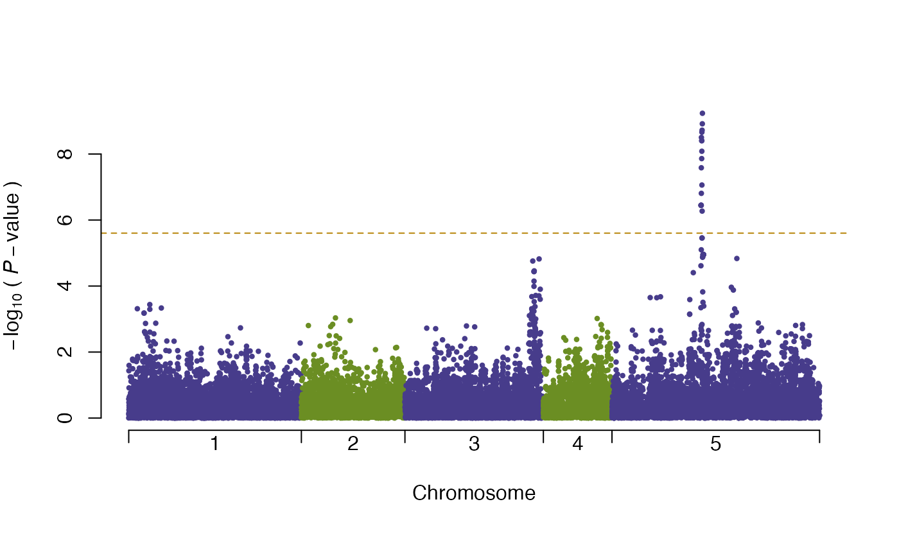
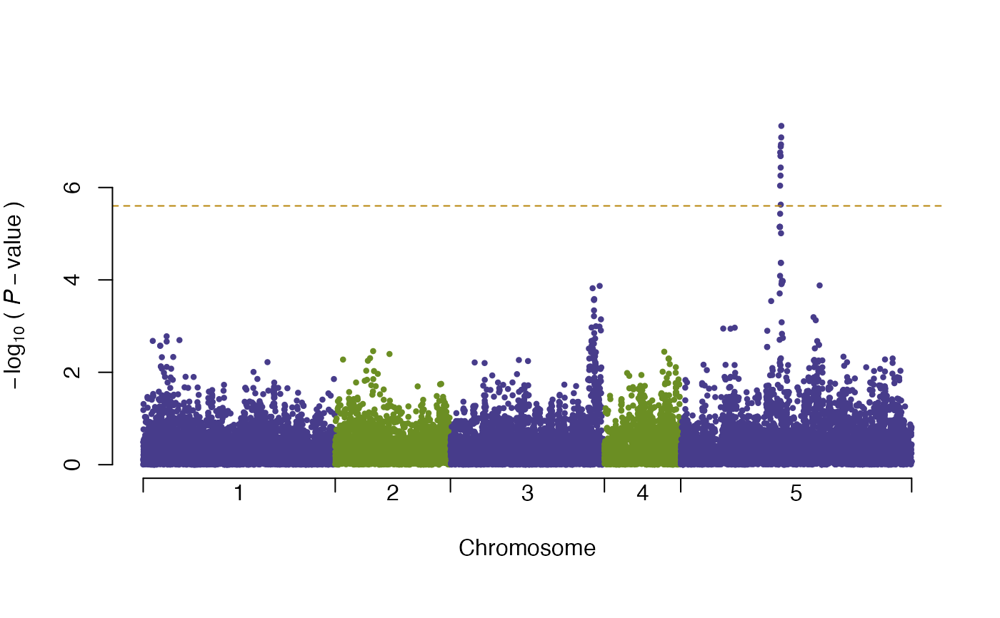

Variance Genome-wide association for using nonparametric variance test
vGWAS(phenotype, geno.matrix, kruskal.test = FALSE, marker.map = NULL, chr.index = NULL, pB = TRUE)
| phenotype | a |
|---|---|
| geno.matrix | a |
| kruskal.test | a |
| marker.map | a |
| chr.index | a |
| pB | show progress bar |
a data.frame containing columns of marker names,
chromosome indices, marker.map positions,
test statistic values, and p.value for each position.
Shen, X., Pettersson, M., Ronnegard, L. and Carlborg, O.
(2011): Inheritance beyond plain heritability:
variance-controlling genes in Arabidopsis thaliana.
PLoS Genetics, 8, e1002839.
Ronnegard, L., Shen, X. and Alam, M. (2010):
hglm: A Package for Fitting Hierarchical Generalized
Linear Models. The R Journal, 2(2), 20-28.
# \donttest{ # ----- load data ----- # data(pheno) data(geno) data(chr) data(map) # ----- variance GWA scan ----- # vgwa <- vGWAS(phenotype = pheno, geno.matrix = geno, marker.map = map, chr.index = chr)#> | | | 0% | | | 1% | |= | 1% | |= | 2% | |== | 2% | |== | 3% | |== | 4% | |=== | 4% | |=== | 5% | |==== | 5% | |==== | 6% | |===== | 6% | |===== | 7% | |===== | 8% | |====== | 8% | |====== | 9% | |======= | 9% | |======= | 10% | |======= | 11% | |======== | 11% | |======== | 12% | |========= | 12% | |========= | 13% | |========= | 14% | |========== | 14% | |========== | 15% | |=========== | 15% | |=========== | 16% | |============ | 16% | |============ | 17% | |============ | 18% | |============= | 18% | |============= | 19% | |============== | 19% | |============== | 20% | |============== | 21% | |=============== | 21% | |=============== | 22% | |================ | 22% | |================ | 23% | |================ | 24% | |================= | 24% | |================= | 25% | |================== | 25% | |================== | 26% | |=================== | 26% | |=================== | 27% | |=================== | 28% | |==================== | 28% | |==================== | 29% | |===================== | 29% | |===================== | 30% | |===================== | 31% | |====================== | 31% | |====================== | 32% | |======================= | 32% | |======================= | 33% | |======================= | 34% | |======================== | 34% | |======================== | 35% | |========================= | 35% | |========================= | 36% | |========================== | 36% | |========================== | 37% | |========================== | 38% | |=========================== | 38% | |=========================== | 39% | |============================ | 39% | |============================ | 40% | |============================ | 41% | |============================= | 41% | |============================= | 42% | |============================== | 42% | |============================== | 43% | |============================== | 44% | |=============================== | 44% | |=============================== | 45% | |================================ | 45% | |================================ | 46% | |================================= | 46% | |================================= | 47% | |================================= | 48% | |================================== | 48% | |================================== | 49% | |=================================== | 49% | |=================================== | 50% | |=================================== | 51% | |==================================== | 51% | |==================================== | 52% | |===================================== | 52% | |===================================== | 53% | |===================================== | 54% | |====================================== | 54% | |====================================== | 55% | |======================================= | 55% | |======================================= | 56% | |======================================== | 56% | |======================================== | 57% | |======================================== | 58% | |========================================= | 58% | |========================================= | 59% | |========================================== | 59% | |========================================== | 60% | |========================================== | 61% | |=========================================== | 61% | |=========================================== | 62% | |============================================ | 62% | |============================================ | 63% | |============================================ | 64% | |============================================= | 64% | |============================================= | 65% | |============================================== | 65% | |============================================== | 66% | |=============================================== | 66% | |=============================================== | 67% | |=============================================== | 68% | |================================================ | 68% | |================================================ | 69% | |================================================= | 69% | |================================================= | 70% | |================================================= | 71% | |================================================== | 71% | |================================================== | 72% | |=================================================== | 72% | |=================================================== | 73% | |=================================================== | 74% | |==================================================== | 74% | |==================================================== | 75% | |===================================================== | 75% | |===================================================== | 76% | |====================================================== | 76% | |====================================================== | 77% | |====================================================== | 78% | |======================================================= | 78% | |======================================================= | 79% | |======================================================== | 79% | |======================================================== | 80% | |======================================================== | 81% | |========================================================= | 81% | |========================================================= | 82% | |========================================================== | 82% | |========================================================== | 83% | |========================================================== | 84% | |=========================================================== | 84% | |=========================================================== | 85% | |============================================================ | 85% | |============================================================ | 86% | |============================================================= | 86% | |============================================================= | 87% | |============================================================= | 88% | |============================================================== | 88% | |============================================================== | 89% | |=============================================================== | 89% | |=============================================================== | 90% | |=============================================================== | 91% | |================================================================ | 91% | |================================================================ | 92% | |================================================================= | 92% | |================================================================= | 93% | |================================================================= | 94% | |================================================================== | 94% | |================================================================== | 95% | |=================================================================== | 95% | |=================================================================== | 96% | |==================================================================== | 96% | |==================================================================== | 97% | |==================================================================== | 98% | |===================================================================== | 98% | |===================================================================== | 99% | |======================================================================| 99% | |======================================================================| 100%#> nominal significance threshold with Bonferroni correction for 20000 tests are calculated.summary(vgwa)#> [1] Top 10 markers, sorted by p-value:#> marker chr map Pval #> 1 V16630 5 393135 5.831907e-10 #> 2 V16627 5 392704 1.214440e-09 #> 3 V16621 5 391781 1.898375e-09 #> 4 V16614 5 390839 2.178108e-09 #> 5 V16601 5 388736 3.152539e-09 #> 6 V16609 5 390084 3.952804e-09 #> 7 V16612 5 390492 3.952804e-09 #> 8 V16613 5 390663 8.246623e-09 #> 9 V16608 5 389975 1.377877e-08 #> 10 V16598 5 388349 2.611931e-08# ----- calculate the variance explained by the strongest marker ----- # vGWAS.variance(phenotype = pheno, marker.genotype = geno[,vgwa$p.value == min(vgwa$p.value)])#> variance explained by the mean part of model: #> 4.2 % #> variance explained by the variance part of model: #> 23.06 % #> variance explained in total: #> 27.26 %#> $vm #> C #> 0.1026317 #> #> $vv #> C #> 0.5628937 #> #> $ve #> C #> 1.77584 #> #> $vp #> C #> 2.441366 #>plot(vgwa2)#> nominal significance threshold with Bonferroni correction for 20000 tests are calculated.summary(vgwa2)#> [1] Top 10 markers, sorted by p-value:#> marker chr map Pval #> 1 V16630 5 393135 4.639765e-08 #> 2 V16627 5 392704 8.241863e-08 #> 3 V16621 5 391781 1.169544e-07 #> 4 V16614 5 390839 1.302536e-07 #> 5 V16601 5 388736 1.740272e-07 #> 6 V16609 5 390084 2.077816e-07 #> 7 V16612 5 390492 2.077816e-07 #> 8 V16613 5 390663 3.697653e-07 #> 9 V16608 5 389975 5.529683e-07 #> 10 V16598 5 388349 9.130599e-07# }